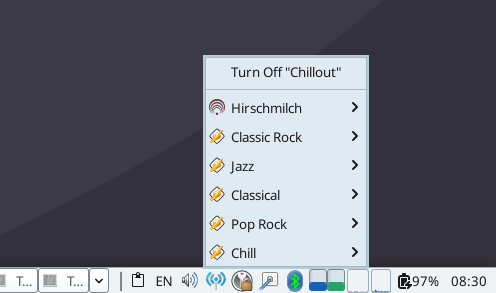
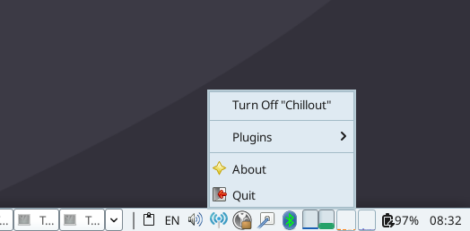
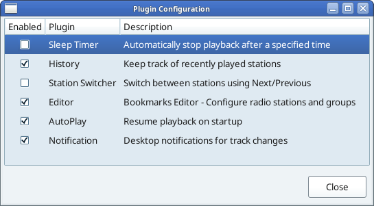

A modern online radio streaming player for Linux
Lightweight, feature-rich, and lives in your system tray. Built with GTK, GStreamer, and Python 3.10+.
Lives in your system tray. Minimal resource usage, maximum convenience.
High-quality audio with GStreamer. Supports all major streaming formats.
Displays track info and notifications on song changes.
Easy volume with mouse scroll wheel.
Custom favicons for each station.
Editor, History, Sleep Timer, AutoPlay, Notification and more.

System tray with station list

Built-in bookmarks editor

Easy station management